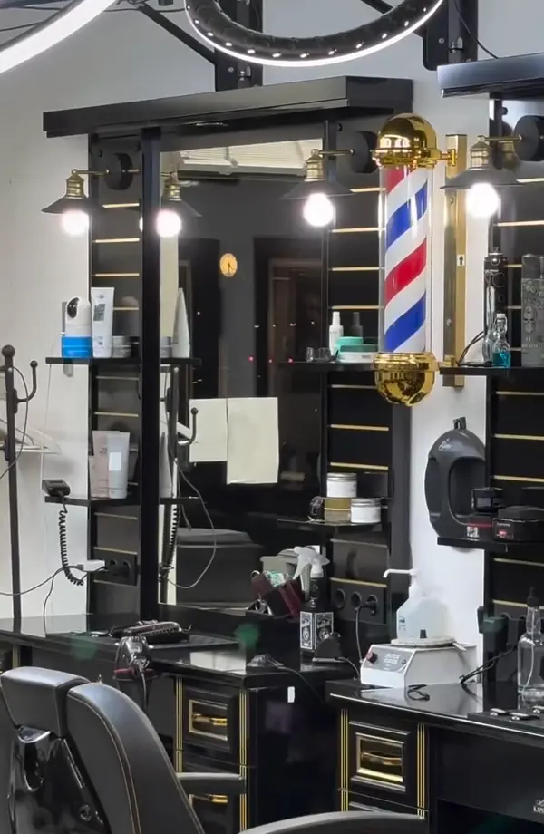
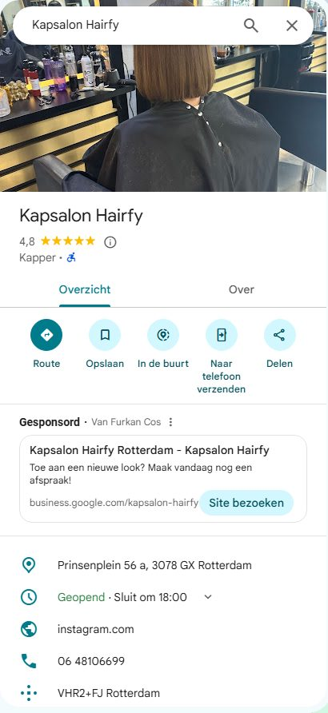
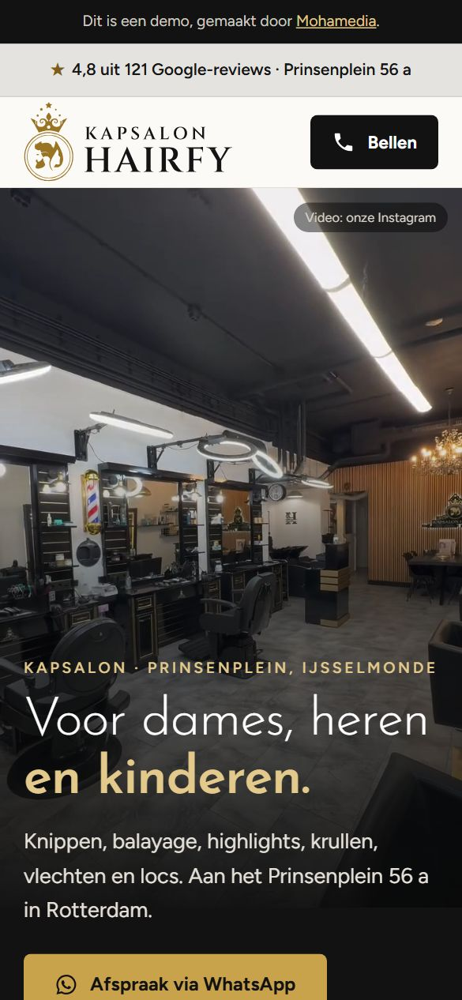

01
Vakkundig
Klanten schrijven dat er met jaren ervaring geknipt wordt.
Kapsalon · Prinsenplein, IJsselmonde
Knippen, balayage, highlights, krullen, vlechten en locs. Aan het Prinsenplein 56 a in Rotterdam.
4,8 uit 121 reviews op Google Rotterdam-IJsselmonde
Afspraak
Kies voor wie, wat en welke dag. Je bericht staat dan op het kaartje en gaat met één tik naar de salon via WhatsApp.
Hoi Kapsalon Hairfy, ik wil graag een afspraak voor mij, voor knippen. Wanneer kan ik terecht?
Het bericht gaat naar 06 48 10 66 99, het nummer van Kapsalon Hairfy.Waarom Hairfy
Drie dingen die terugkomen in de reviews op Google.
Klanten schrijven dat er met jaren ervaring geknipt wordt.
Klanten schrijven dat het resultaat er net zo uitziet als de foto die ze meenamen.
Klanten noemen een vriendelijke ontvangst, een schone salon en hulp bij moeilijk haar.
Noemt Hairfy de beste kapper van Rotterdam-Zuid.
AbdelghaniIs blij met de nieuwe look: het resultaat is precies zoals op de foto.
IlonaIs altijd erg tevreden over het kapsel en over de vriendelijke service.
yassine010zzSamengevat uit reviews op Google, niet letterlijk geciteerd.
Zo werkt het
Vragen
Ja, een kinderknipbeurt staat bij onze behandelingen.
Ja. Krullend haar, vlechten en locs staan alle drie bij onze behandelingen, net als balayage, highlights en een keratinebehandeling.
Bel 06 48 10 66 99 of kom langs in de salon. Een appje sturen kan ook, met de keuzehulp hierboven.
Dat hangt af van je haar en wat je wilt. Vraag het via WhatsApp, dan weet je het vooraf.
Nee, op zondag is de salon dicht. Maandag tot en met zaterdag zijn we open, op vrijdag tot 20:00.
Bezoek
Kapsalon Hairfy
Prinsenplein 56 a
3078 GX Rotterdam
| Maandag | 09:00 – 18:00 |
|---|---|
| Dinsdag | 08:30 – 18:00 |
| Woensdag | 08:30 – 18:00 |
| Donderdag | 08:30 – 18:00 |
| Vrijdag | 08:30 – 20:00 |
| Zaterdag | 09:00 – 18:00 |
| Zondag | gesloten |
Op feestdagen kan het anders zijn. Bel bij twijfel even.

Prinsenplein 56 a
3078 GX Rotterdam
De kaart komt van Google Maps en laadt pas als je klikt.
Kapsalon Hairfy
Stuur een appje met je wens, of bel de salon aan het Prinsenplein.


Voorbeeld, geen belofte. Vul samen in wat realistisch is.
Per jaar: € 1.300 extra omzet.
€ 595 is de omzet van 24 bezoeken.
© Mohamedia · demo-ontwerp, gebruik zonder betaling niet toegestaan